Idle · 3 帧/视图
naiding_idle_grid_v03.png · 1278×1230 · 3×3 · 每格 426×410
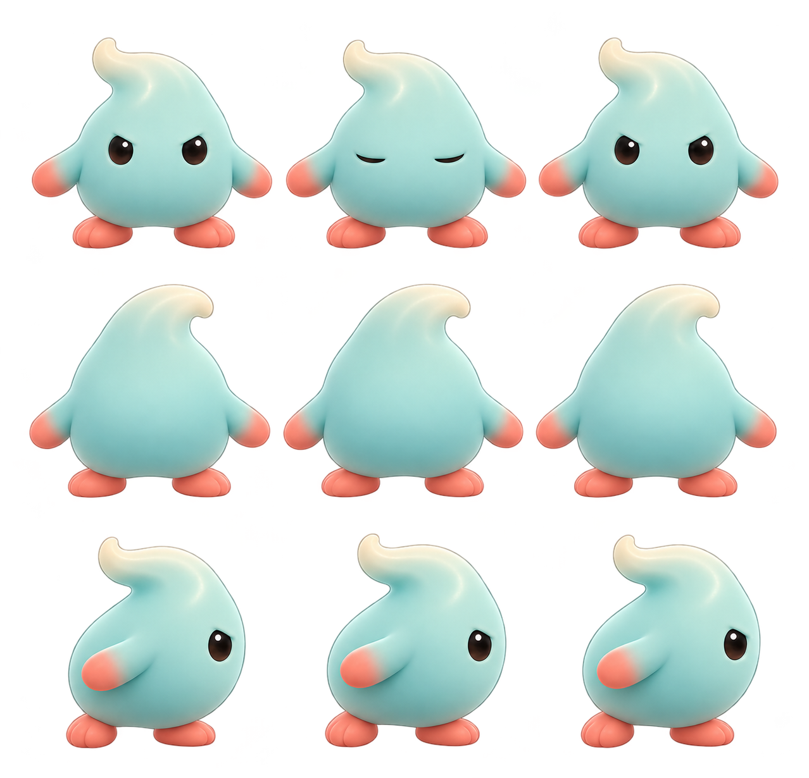
已替换旧背面脸部痕迹；仍有透明边缘散点需清理。
奶丁 naiding / 奶盾 naidun · 概念方向已通过，进入动画姿势探索。
大多数图按状态横向查看帧顺序、按视图纵向排列；hit 图每个视图只有 1 帧，视图从左到右排列。Naiding 视图顺序：正面、背面、右侧；Naidun 视图顺序：正面、背面、右侧、左侧。Naidun 左右侧分开保留，以确保盾牌始终朝向移动前方。
naiding_idle_grid_v03.png · 1278×1230 · 3×3 · 每格 426×410

已替换旧背面脸部痕迹；仍有透明边缘散点需清理。
naiding_move_grid_v01.png · 1448×1086 · 4×3 · 每格 362×362
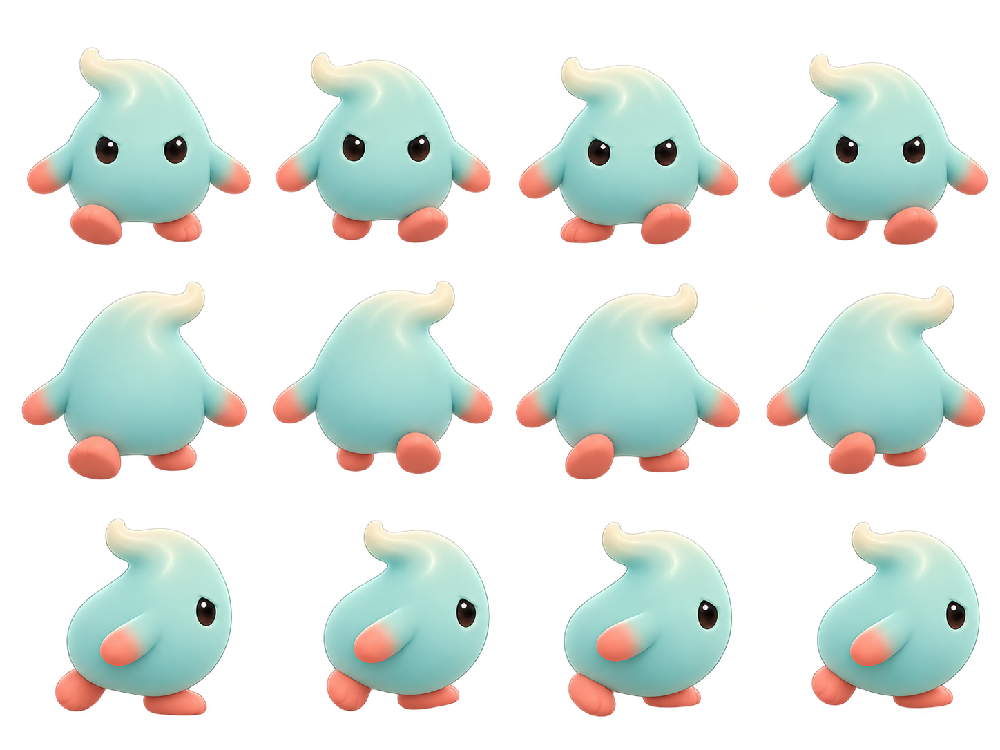
网格等分；仍需统一脚底锚点并导出 512 像素源帧。
naiding_telegraph_grid_v01.png · 1295×1215 · 2×3
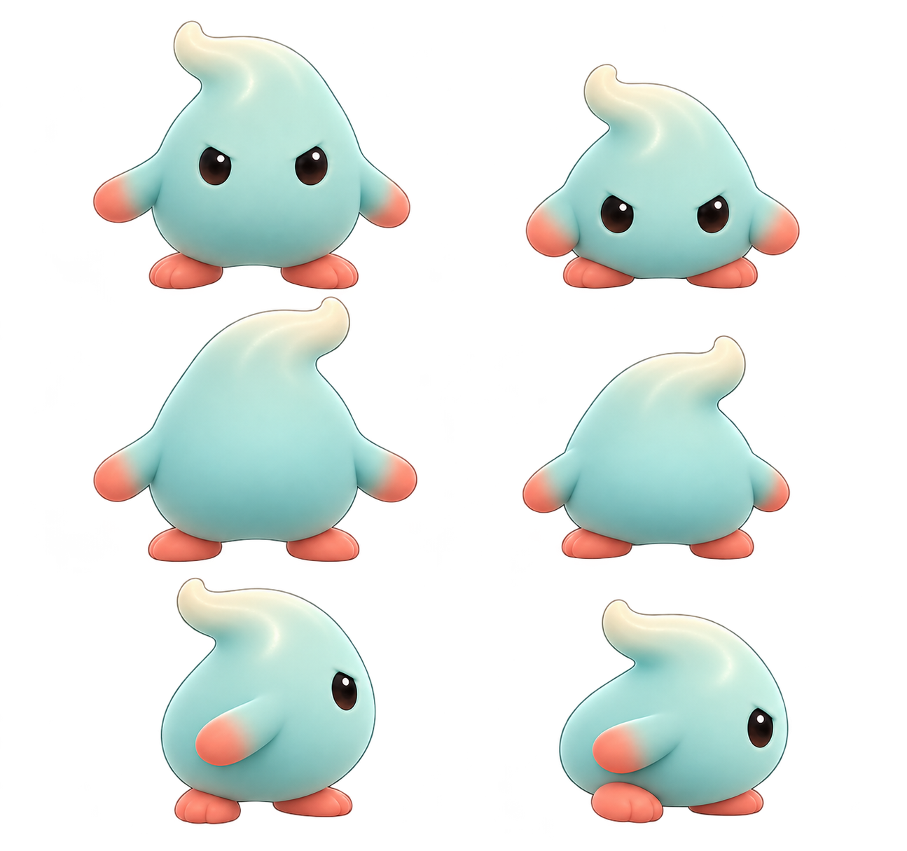
姿势前倾意图清楚；当前网格不可等分，待重新排版。
naiding_attack_grid_v01.png · 1536×1024 · 3×3
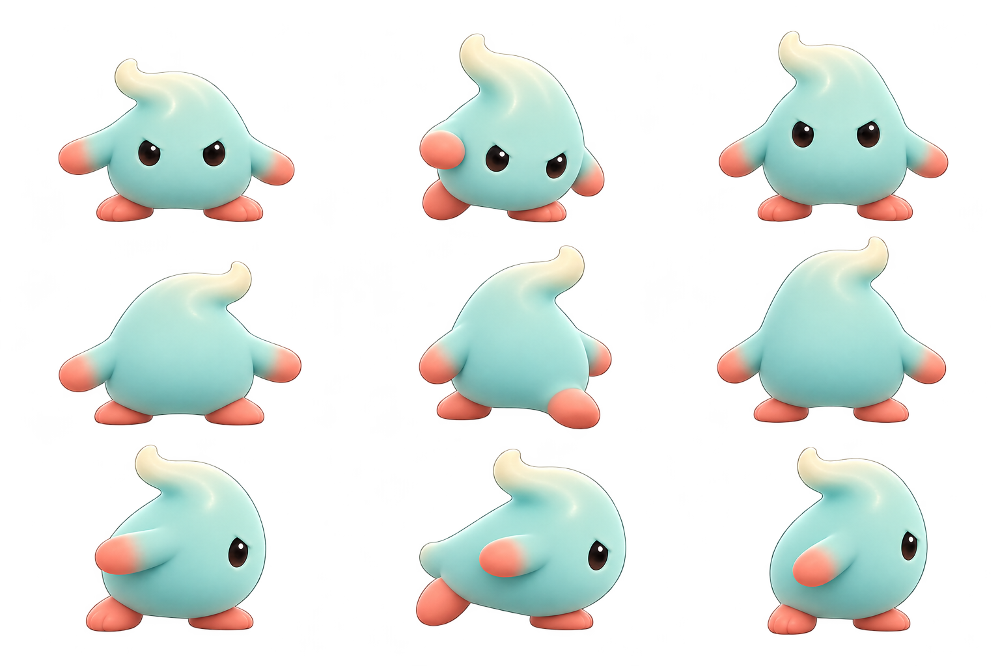
需复核透明边缘和攻击动作起止，再按准确网格重新排版。
naiding_hit_grid_v01.png · 2172×724 · 3 个视图横排 · 每格 724×724
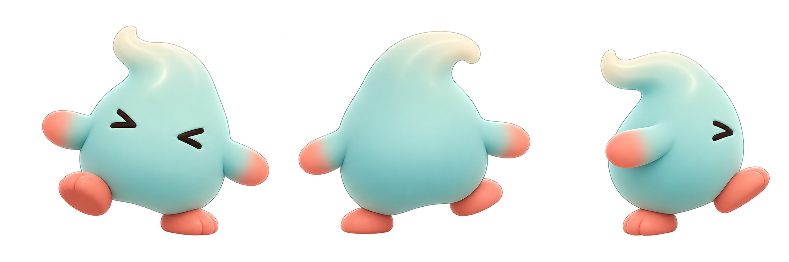
单姿势覆盖三个方向；需统一正式源帧画布。
naiding_death_grid_v01.png · 1536×1024 · 3×3
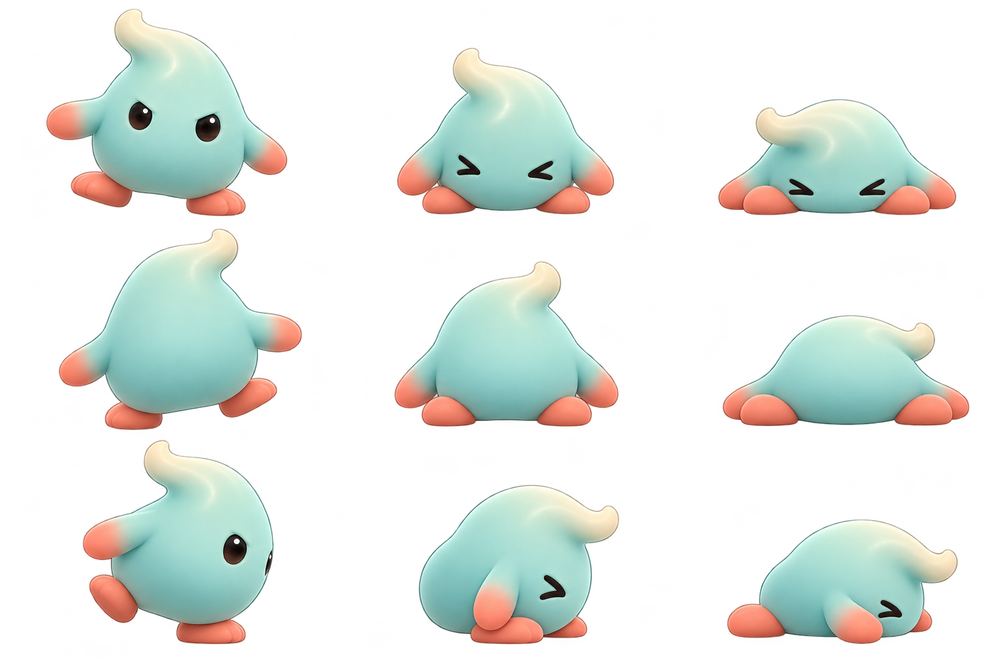
背面出现面部痕迹，需要修正；网格待重新排版。
naidun_idle_grid_v01.png · 1312×1199 · 3×4
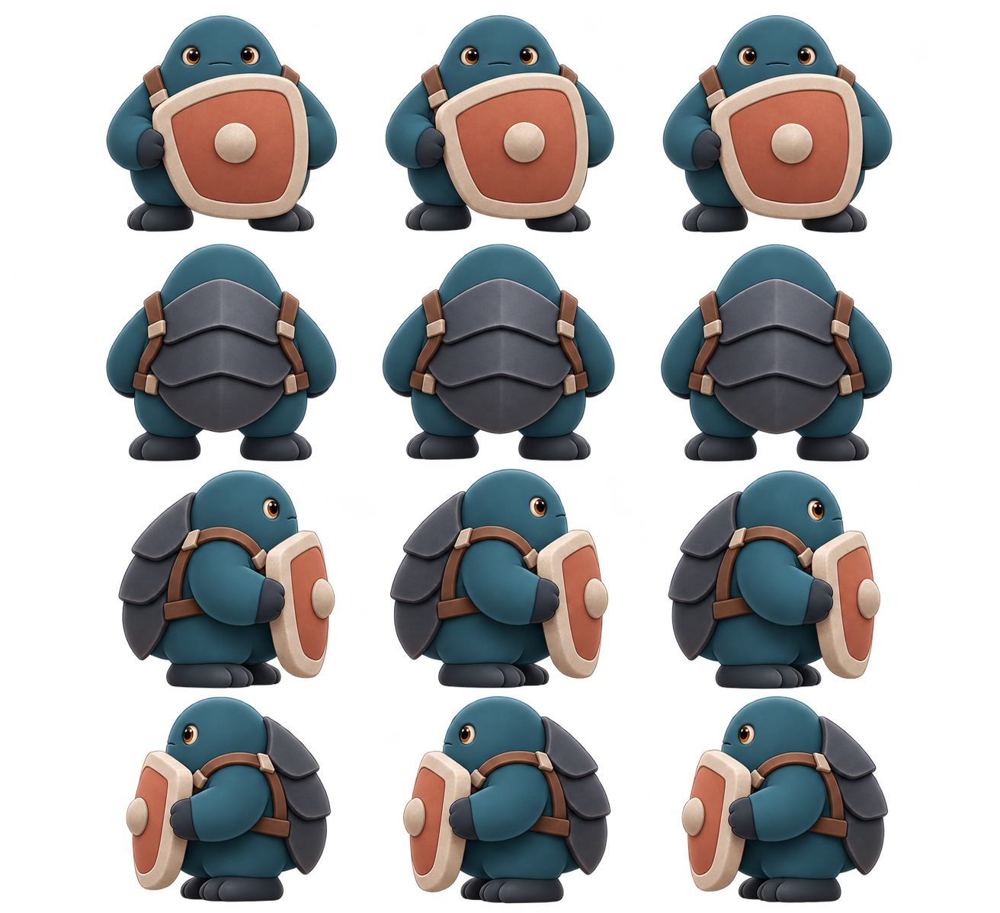
盾牌正面位置可读；网格待重新排版，盾牌还未拆独立图层。
naidun_move_grid_v01.png · 1427×1102 · 4×4
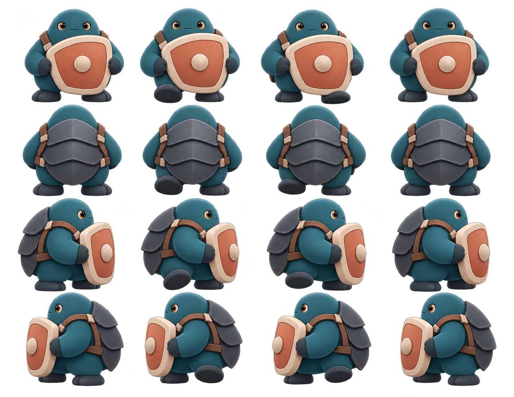
四方向均有独立稿；网格不可等分，盾牌层待拆分。
naidun_telegraph_grid_v01.png · 1024×1536 · 2×4 · 每格 512×384
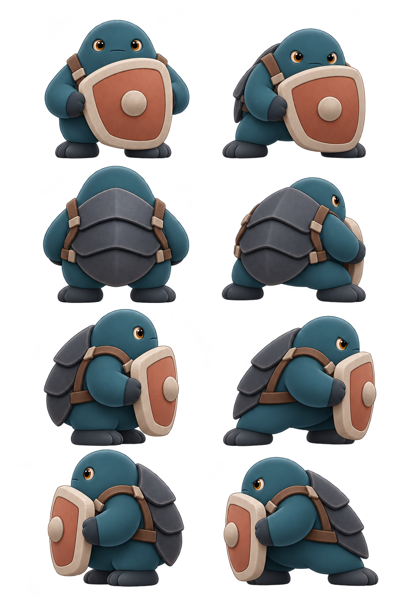
盾击前摇意图清楚；仍需校正锚点、清边和盾牌拆层。
naidun_attack_grid_v01.png · 1536×1024 · 3×4 · 每格 512×256
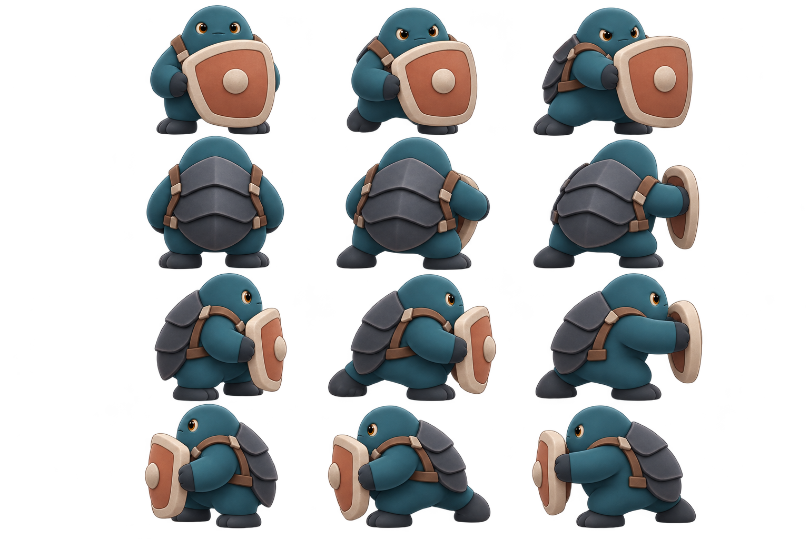
盾击动作读得清楚；母版高度较窄，正式帧需要统一到 512×512。
naidun_hit_grid_v01.png · 2172×724 · 4 个视图横排 · 每格 543×724
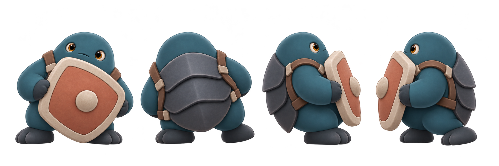
单姿势覆盖四方向；需统一正式源帧画布。
naidun_death_grid_v01.png · 1086×1448 · 3×4 · 每格 362×362
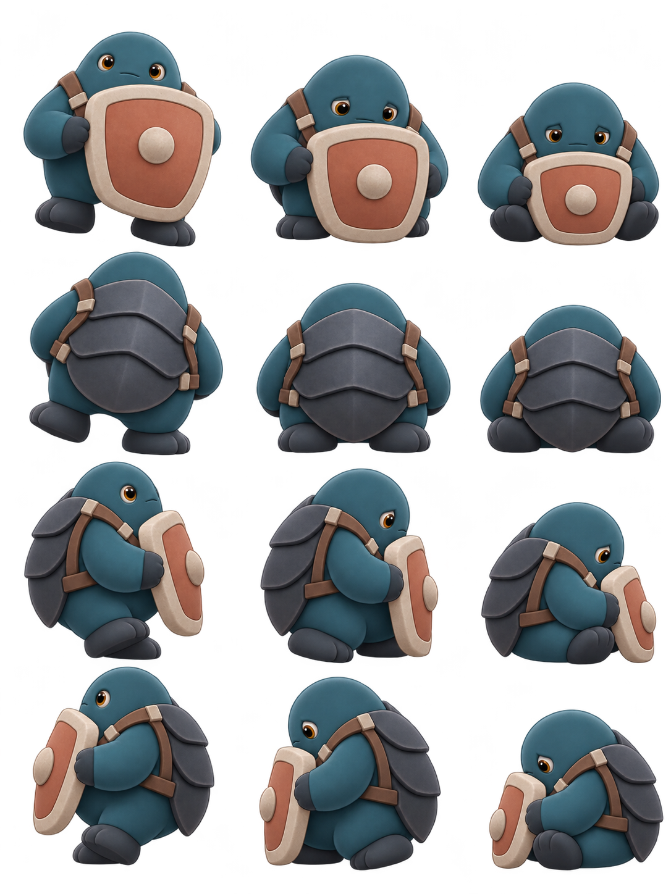
盾牌仍握在手中；循环节奏、透明边缘与脚底锚点待制作 QA。
| 状态 | 每视图帧数 | 首轮建议 |
|---|---|---|
| idle | 3 | 0.25 秒/帧，循环 |
| move | 4 | 0.10 秒/帧，循环 |
| telegraph | 2 | 0.175 秒/帧，单次；后续按现有敌人前摇时长校准 |
| attack | 3 | 0.10 秒/帧，单次 |
| hit | 1 | 停留约 0.14 秒 |
| death | 3 | 0.12 秒/帧，单次 |
播放时间是初始视觉提案。正式 PNG 帧、锚点、动画循环和运行时导入仍需在清理、精确排版与游戏画面复核后另行交付。